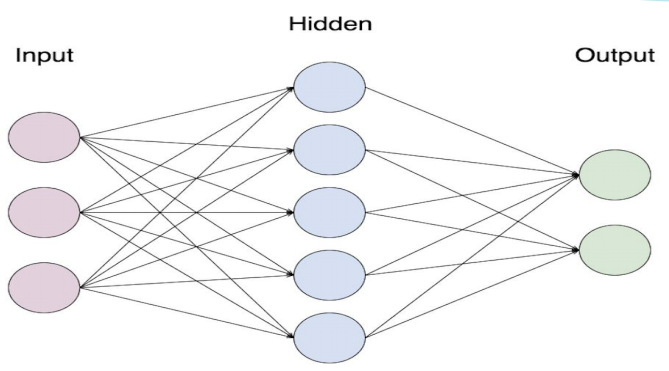
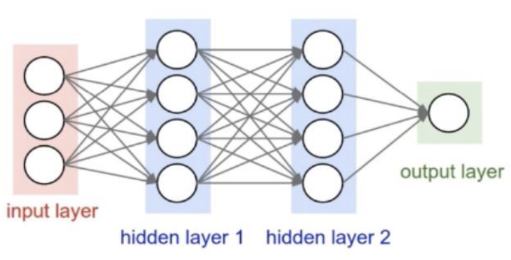
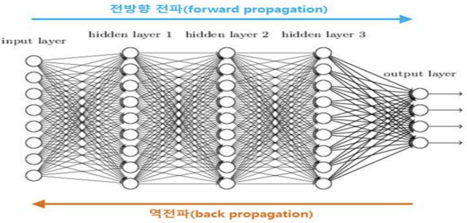
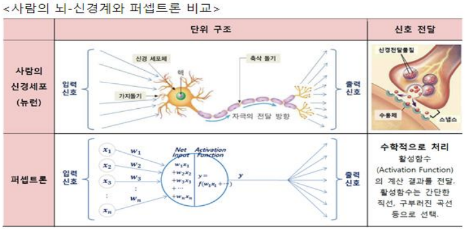
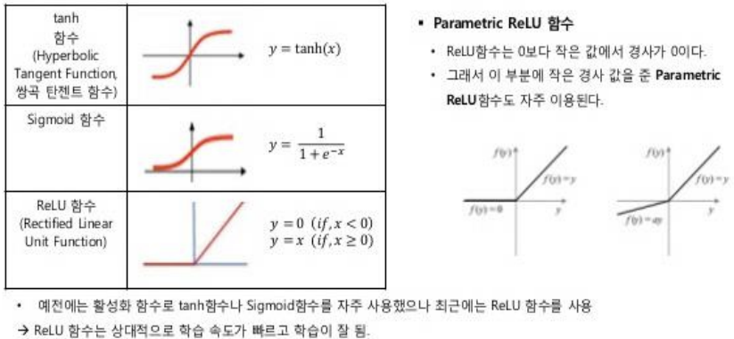

1. XOR 문제
- AND와 OR 게이트는 직선을 그어 결과값이 1인 점을 구별할 수 있습니다.
- 그러나 XOR의 경우 선을 그어 구분할 수 없습니다.
- 이는 인공지능 분야의 선구자 였던 MIT의 마빈 민스키(Marvin Minsky) 교수가 1969년에 발표한 <퍼셉트론즈(Perceptrons)> 라는 논문에 나오는 내용 입니다.
- 뉴런 -> 신경망 -> 지능 이라는 도식을 따라 퍼셉트론 -> 인공신경망 -> 인공지능이 가능하리라 꿈꾸던 당시 사람들은 이것이 쉽지 않다는 사실을 깨닫게 됩니다.
- 이 논문 이후 인공지능 연구가 한동안 침체기(빙하기)를 겪게 됩니다.
- 10년이 지난 후에야 이 문제가 해결 되는데, 이를 해결한 개념이 다층 퍼셉트론(multilayer perceptron)입니다.
1) 단층 퍼셉트론
- 인공 뉴런은 가중치와 활성화 함수의 연결로 이루어진 매우 간단한 구조입니다.
- 놀라운 점은, 이렇게 간단한 개념의 인공 뉴런을 충분히 많이 연결해 놓는 것만으로 인간이 인지하기 어려운 매우 복잡한 패턴까지도 스스로 학습 할 수 있게 된다는 사실입니다.
- 그러나 수천 ~ 수만 개의 w와 b값의 조합을 일일이 변경해가며 계산하려면 매우 오랜 시간이 걸리기에 신경망을 제대로 훈련시키기가 어려웠습니다.
- 특히나 신경망의 층이 깊어질수록 시도해봐야 하는 조합의 경우의 수가 기하급수적으로 늘어나기 때문에 과거에는 유의미한 신경망을 만들기란 거의 불가능하다고 여겨 졌습니다.

2) 심층 퍼셉트론
- 단층 신경망의 문제점들을 끈질기게 연구하던 제프리 힌튼(Geoffrey Hinton) 교수가 제한된 볼트만 머신(Restricted Boltzmann Machine)이라는 신경망 학습 알고리즘을 개발하였고, 이 방법으로 심층 신경망을 효율적으로 학습시킬 수 있음을 증명하면서 다시 한번 신경망이 주목 받게 되었습니다.
그 후 드롭아웃 기법, ReLU 등의 활성화 함수들이 개발 되면서 딥러닝 알고리즘은 급속한 발전을 이룹니다. 또한 이와 함께 데이터 양의 폭발적인 증가와 컴퓨팅 파워의 발전, 특히 단순한 수치 계산과 병렬 처리에 강한 GPU의 발전 덕분에 드디어 본격적인 딥러닝의 시대가 열리게 되었습니다.
이렇게 발전해온 알고리즘의 중심에는 역전파(back propagation)가 있습니다.
- 역전파는 간단하게 말하면, 출력층이 내놓은 결과의 오차를 신경망을 따라 입력층까지 역으로 전파하며 계산해 나가는 방식 입니다.
- 이 방식은 입력층부터 가중치를 조절해가는 기존 방식보다 훨씬 유의미한 방식으로 가중치를 조절해줘서 최적화 과정이 훨씬 빠르고 정확해 집니다.


3) 역전파(back propagation)
- 순방향 전파 : 모든 조합의 경우의 수에 대해 가중치를 대입하고 계산함.
역방향 전파 : 결과값의 오차를 앞쪽으로 전파하면서 가중치를 갱신함.
역전파는 신경망을 구현하려면 거의 항상 적용해야 하는 알고리즘이지만, 구현 하기는 조금 어렵습니다.
- 하지만 다행히도 텐서플로는 활성화 함수와 학습 함수 대부분에 역전파 기법을 기본적으로 제공해줘서, 역전파를 따로 구현할 일은 따로 없습니다.
- 역전파뿐 아니라 드롭아웃(dropout) 알고리즘이나 ReLU 같은 활성화 함수도 직접 구현할 필요는 없습니다. 마치 어떤 프로그램을 작성할때 컴파일러부터 구현하지 않는 것과 마찬가지죠.
- 즉, 텐서플로를 사용하면 다양한 학습 알고리즘을 직접 구현하지 않고도 매우 쉽게 신경망을 만들고 학습시킬 수 있습니다.
2. 인공 신경망(Artificial Neural Network)
- 인간의 뇌는 치밀하게 연결된 약 1000억개의 뉴런으로 이루어져 있습니다. 우리 몸 안에 있는 수많은 뉴런은 서로 긴밀히 연결되어 신경말단에서 부터 뇌에 이르기 까지 곳곳에서 자신의 역할을 수행합니다. 이처럼 복잡하고 어려운 조합의 결과가 바로 우리의 '생각' 입니다.
- 그러면 뉴런과 비슷한 메커니즘을 사용하면 인공적으로 ‘생각하는 그 무언가를 만들 수 있지 않을까
- 이러한 상상에서 출발한 연구가 바로 인공 신경망(Artifical Neural Network) 연구입니다.
- 뉴런과 뉴런이 서로 새로운 연결을 만들기도 하고 필요에 따라 바꾸는 것처럼, 여러 층의 퍼셉트론을 서로 연결시키고 복잡하게 조합하여 주어진 입력 값에 대한 판단을 하게 하는 것이 인공 신경망의 기본적인 구조 입니다.
3. 퍼셉트론(perceptron)
- 신경망을 이루는 가장 중요한 기본 단위는 퍼셉트론(perceptron) 입니다.
- 퍼셉트론은 입력 값과 활성화 함수(activation function: ex) sigmoid, ReLU)를 사용해 출력 값을 다음으로 넘기는 가장 작은 신경망 단위입니다

4. 뉴런의 구성과 작동원리
- 인공 신경망(artifical neural network)의 개념은 뇌를 구성하는 신경 세포, 즉 뉴런(neural)을 동작 원리에 기초 합니다.
- 뉴런의 기본동작은 가지돌기에서 신호를 받아 들이고, 이 신호가 축삭돌기를 지나 축삭돌기 말단으로 전달되는 것입니다.
- 그런데 축삭돌기를 지나는 동안 신호가 약해지거나, 너무 약해서 축산말단까지 전달되지 않거나, 또는 너무 강하게 전달 되기도 합니다.
- 그리고 축산말단까지 전달된 신호는 연결된 다른 뉴런의 가지돌기로 전달 됩니다.
- 우리 인간은 이러한 원리를 지닌 수억 개의 뉴런 조합을 통해서 손가락을 움직이거나 물체를 판별하는 등의 다양한 조작과 판단을 수행하는 것입니다.
5. 인공 신경망의 작동원리
- 인공 신경망은 입력값(x)에 가중치(w)를 곱하고 편향(b)을 더한 뒤 활성화 함수(Sigmoid, ReLU 등)를 거친 결과값 y를 만들어 내는 것이다.
그리고 원하는 y값을 만들어 내기 위해 w와 b의 값을 변경해 가면서 적절한 값을 찾아내는 최적화 과정을 학습(learning) 또는 훈련(training) 이라고 합니다.
출력y, 활성화함수sigmoid. 입력x, 가중치w, 편향b
$$ y = sigmoid ( x * w + b )
$$
6. 활성화 함수(activation function)
- 뇌 신경망에는 시냅스가 있는데, 인공 신경망에서는 이런 방식을 모방한 활성화 함수를 이용 한다.
- 1.시냅스는 전달된 전기 신호가 최소한의 자극 값을 초과하면 활성화되어 다음 뉴런으로 전기신호를 전달한다.
- 2.활성화 함수는 이것을 모방하여 값이 작을 때는 출력 값을 작은 값으로 막고, 일정한 값을 초과하면 출력 값이 급격히 커지는 함수를 이용한다.
- 3.신경망에서 Node는 전달받은 데이터를 가중치를 고려해 합산하고, 그 값을 활성화 함수를 적용해 다음 층에 전달한다.
- 은닉층에서 자주 이용하는 활성화 함수
